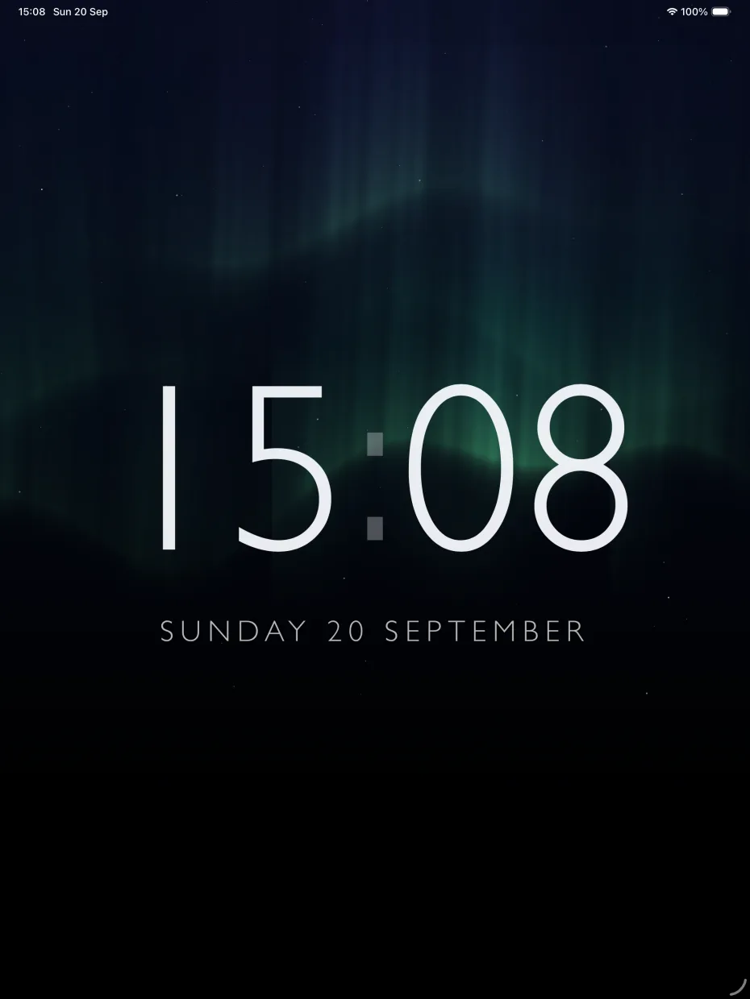
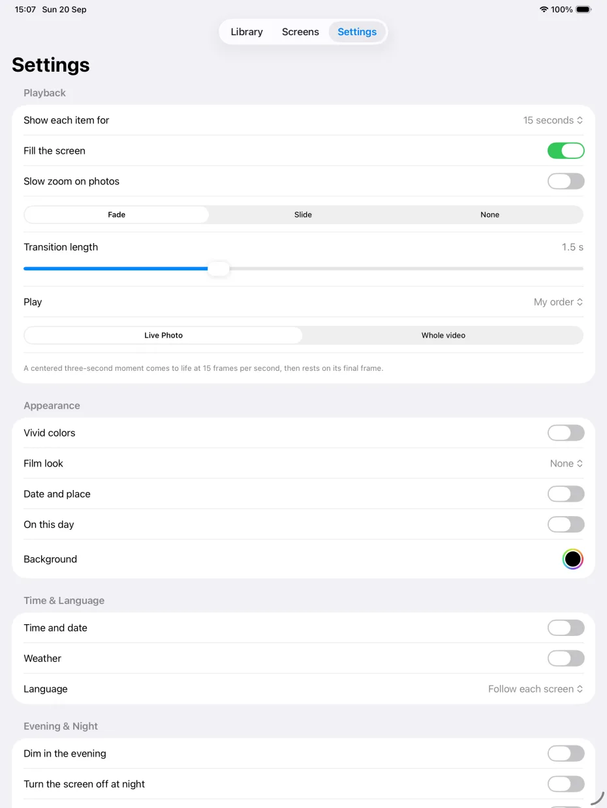
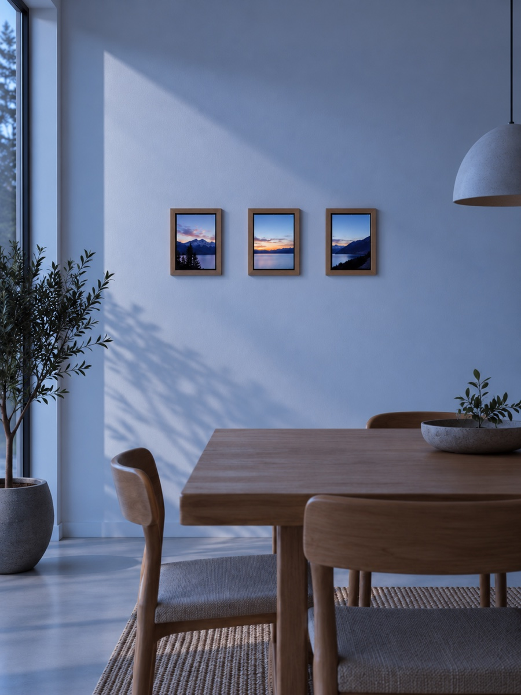

Your library stays yours
There is no FrameNook account, cloud library, analytics, or advertising. Your media is not uploaded to us.
FrameNook runs on your iPhone and gives the old iPad in your drawer a new life as a beautiful photo frame.

Choose what plays and how it feels, then open the address FrameNook shows on another device connected to the same Wi-Fi.
There is no FrameNook account, cloud library, analytics, or advertising. Your media is not uploaded to us.
Open FrameNook in the iPad’s browser and let it become a dedicated display. TVs, other tablets, and computers work too.
Show captions, memories from this day, local weather, or an ambient clock. Dim in the evening and rest at night.
Import from Photos or Files, arrange your library, and tune transitions, timing, crops, video moments, color, captions, and more.


Add photos and videos from Photos, Files, folders, or a Photos album you want FrameNook to follow.
Scan the QR code or type the local address on another device connected to the same Wi-Fi.
Keep FrameNook open while the browser saves its copy. Compatible displays can then keep playing on their own.
FrameNook is coming to the App Store for iPhone. Your displays join through their browser.